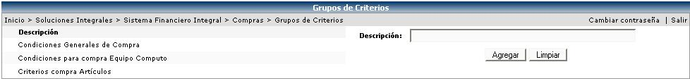
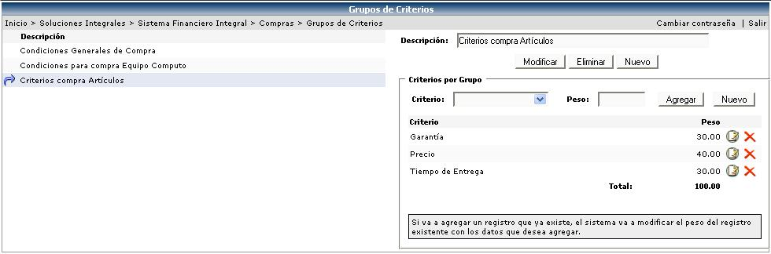

Este catálogo es el que se usará cuando se realice el proceso de publicación de una compra. En el se definirán los pesos para cada uno de los criterios, según lo estipule la empresa.
La evaluación de estos criterios en conjunto con la información que coticen los proveedores, será la que adjudique la orden de compra a un proveedor específico.

Una vez creado el grupo se procede a escoger los criterios (garantía, precio, tiempo de entrega, etc.) y los pesos para cada uno de ellos:

Es importante aclarar que la suma o el total de los pesos, debe ser igual a 100.
Algunos aspectos importantes son:
 Modifica el peso de una línea.
Modifica el peso de una línea.
 Elimina una línea de criterio.
Elimina una línea de criterio.